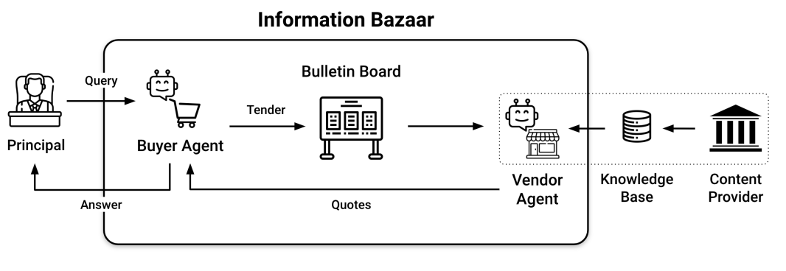
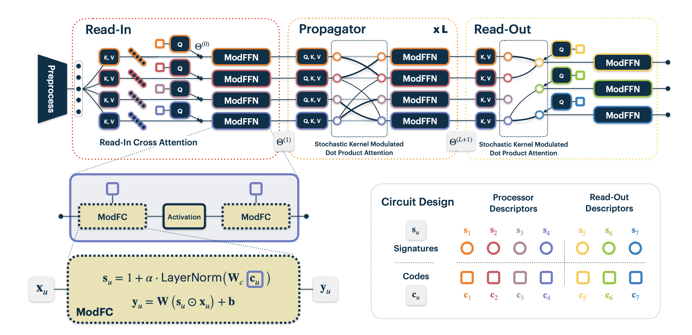
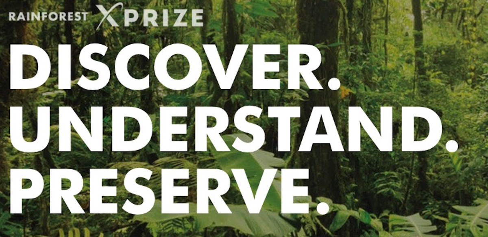

Research & Publications
I completed my PhD at Polytechnique Montreal under the supervision of Chris Pal at Mila - Quebec AI Institute. In general, I'm interested in understanding the nature of intelligence, and developing intelligent systems for the benefit of humanity. My interests include artificial and biological systems (I used to work at the Montreal Neurological Institute), but these days I focus mostly on artificial neural networks. Below, you can see a few of the lines of research I've worked on and the relevant publications. For a complete list of my publications, check out my Google Scholar.
Redesigning Information Markets with Language Models

How should information be bought and sold when language models can generate, summarize, and evaluate text? This line of research examines how LLMs reshape information markets by reducing the asymmetry between buyers and sellers. We show that language models can act as credible intermediaries, enabling new market mechanisms that address the classic buyer's inspection paradox. This work was presented at the First Conference on Language Modeling.
Neural Attentive Circuits

Neural Attentive Circuits (NACs) are a general-purpose, modular architecture in which neural modules communicate through shared attention over a common set of data tokens. NACs enable flexible, compositional computation by allowing modules to be dynamically composed at inference time. This work was published at NeurIPS 2022.
- Neural Attentive Circuits (NeurIPS 2022)
XPRIZE Rainforest - Limelight Rainforest

I was a member of Limelight Rainforest, the winning team of the XPRIZE Rainforest competition ($10M grand prize). The competition challenged teams to develop novel technologies for rapid, autonomous surveying of tropical rainforest biodiversity. Our team developed methods for high-resolution detection and classification of species from aerial and ground-based sensor data.
NAVI - Assistive technology for the blind

In this project, we developed a Navigational Assistant for the Visually Impaired (NAVI) to assist the blind and visually impaired with getting around unmapped urban environments (e.g. apartment complexes) and performing precision navigation (finding a specific door).
Gene Graph Convolutions

Recent advances in next generation sequencing technology are reducing the cost of acquiring gene expression data. This enables improved treatment and clinical outcomes for cancer patients. We used graph convolutional neural networks and gene-gene interaction graphs to make better predictions in this low-data regime.

COVI - A risk prediction app against Covid-19
In April 2020, in the midst of the Covid pandemic, I joined Yoshua Bengio in working to develop a contact tracing application for deployment in partnership with the federal and provincial governments. The result of which was COVI, a research project which resulted in the development of an AI-enabled health mobile application to empower citizens in their fight against the COVID-19 virus. I was a lead author of several of the academic works describing that system, linked below.
Made in Canada, the app was created to help citizens make better informed decisions about their actions to reduce risk, while preserving individual privacy. The COVI app draws on epidemiology, behavioral psychology and artificial intelligence to propose an innovative approach to contact tracing mobile technology.